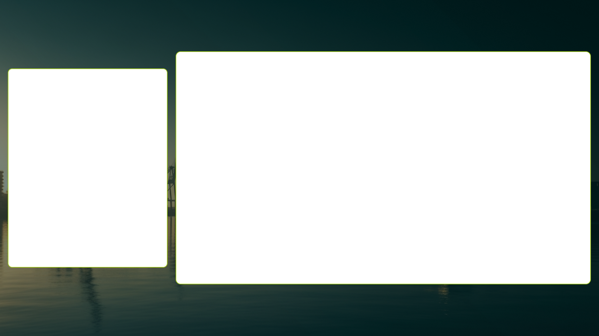

Rot/kariert = transparent (Löcher für OBS). Lime-Rahmen + runde Ecken bleiben. Basis = node 174:70 aus „Stream - Screens".

Löcher sind echt transparent (Cam links + Screen rechts) → in OBS erscheinen dort ATEM-Cam bzw. Screen-Quelle. IC24-Version folgt nach deiner Freigabe (gleiches Layout, IC24-Design).